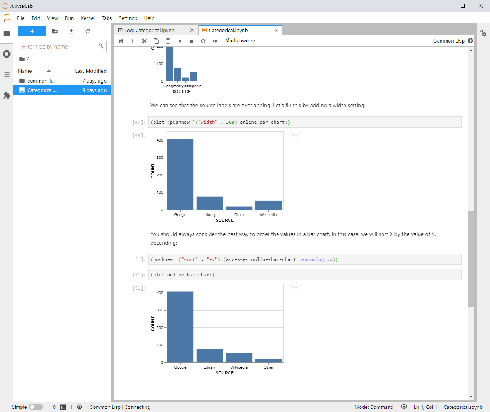

+++
title = "Lisp-Stat"
linkTitle = "Lisp-Stat"
+++
{{< blocks/cover title="Welcome to Lisp-Stat: An environment for Statistical Computing" image_anchor="top" height="full" color="orange" >}}
{{< /blocks/cover >}}
{{% blocks/lead color="primary" %}}
Lisp-Stat provides a statistical computing engine suitable for all
phases of the machine learning lifecycle. Ideal for AI DevOps,
Lisp-Stat covers desktop exploration through to production API
endpoints. Lisp-Stat provides a secure, safe and managable environment.
{{% /blocks/lead %}}
{{< blocks/section color="dark" >}}
{{% blocks/feature icon="fa-lightbulb" title="See Lisp-Stat in action" url="/docs/examples" %}}
See practical examples of using Lisp-Stat for statistical computation
{{% /blocks/feature %}}
{{% blocks/feature icon="fab fa-github" title="Contributions welcome" url="https://github.com/Lisp-Stat" %}}
We do [Pull Request](https://github.com/Lisp-Stat/lisp-stat/pulls) contributions workflow on **GitHub**. New users are always welcome.
{{% /blocks/feature %}}
{{% blocks/feature icon="fas fa-blog" title="Read the 'blog" url="/blog/" %}}
For announcement of latest features, tips, hints and configuration
{{% /blocks/feature %}}
{{< /blocks/section >}}
{{< blocks/section >}}
{{% blocks/feature icon="fas fa-power-off" title="Get Started" url="/docs/getting-started/" %}}
Install to plotting in five minutes
{{% /blocks/feature %}}
{{% blocks/feature icon="fas fa-code" title="Load a R data set" %}}
(define-data-frame mtcars
(rdata 'rdata:datasets 'rdata:mtcars))
{{% /blocks/feature %}}
{{% blocks/feature icon="fas fa-book" title="Jupyter-Lab Notebook" %}}

{{% /blocks/feature %}}
{{< /blocks/section >}}